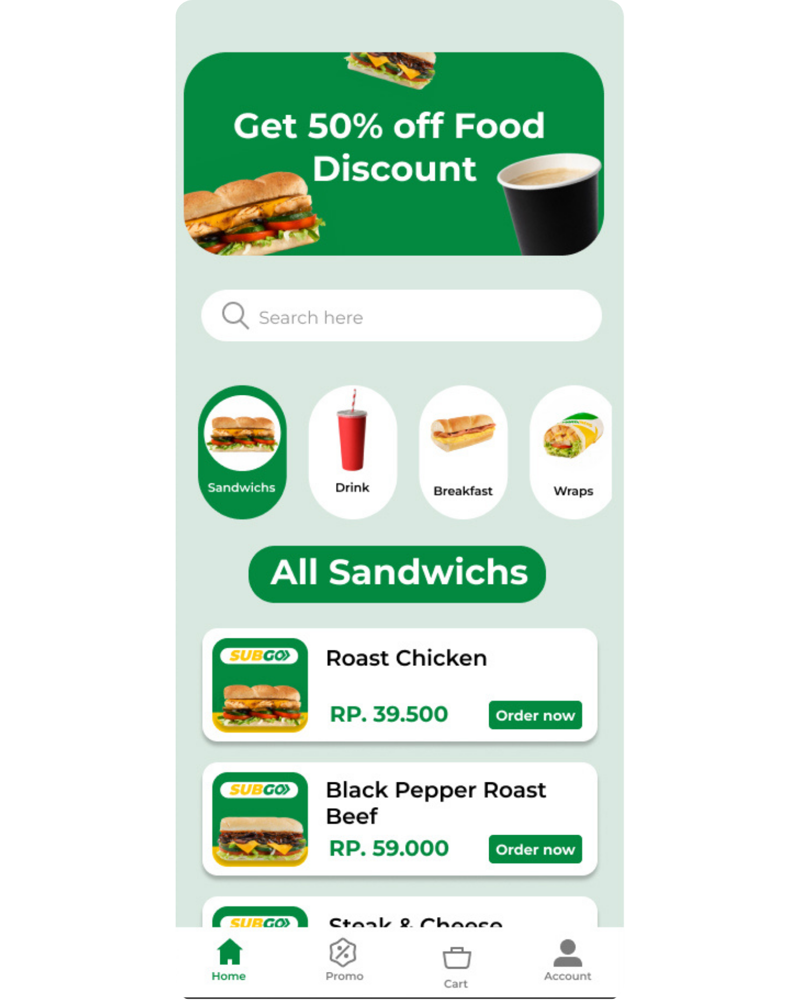
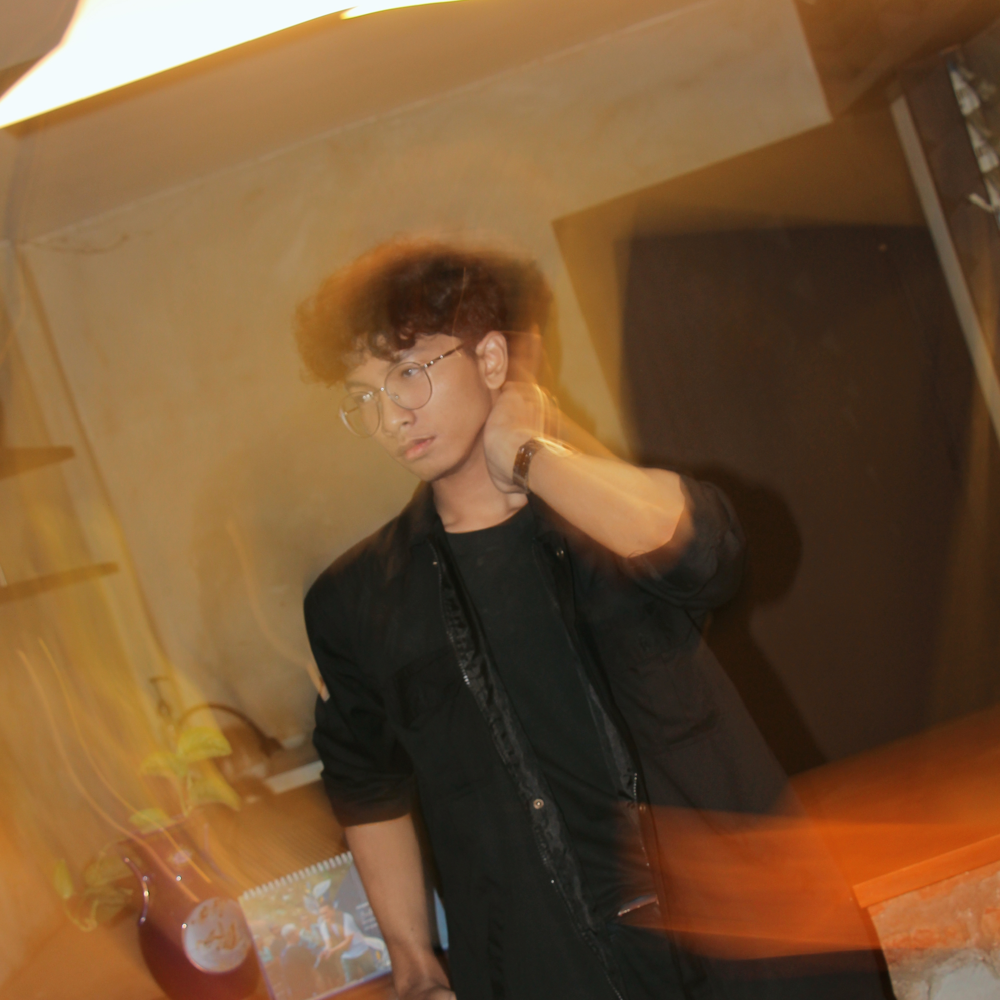
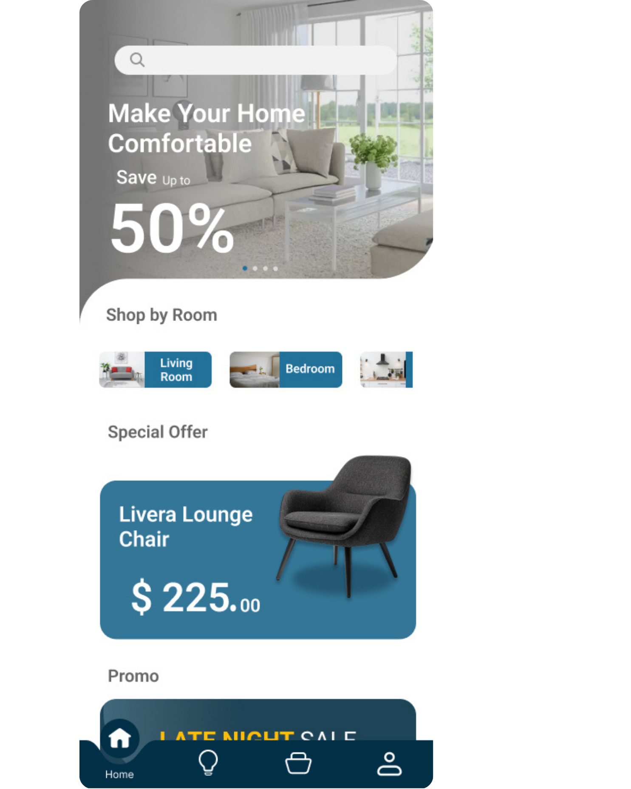
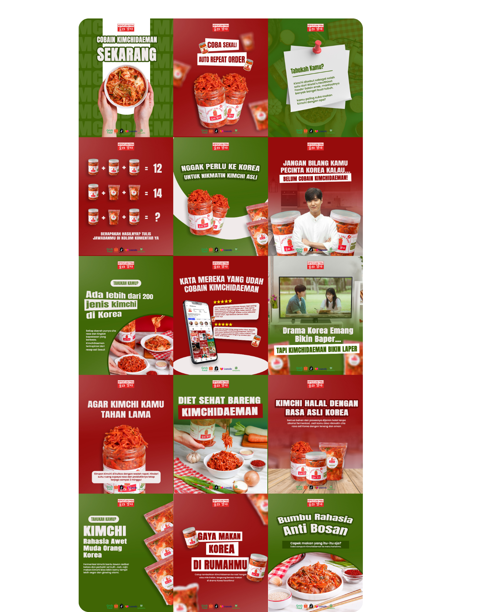
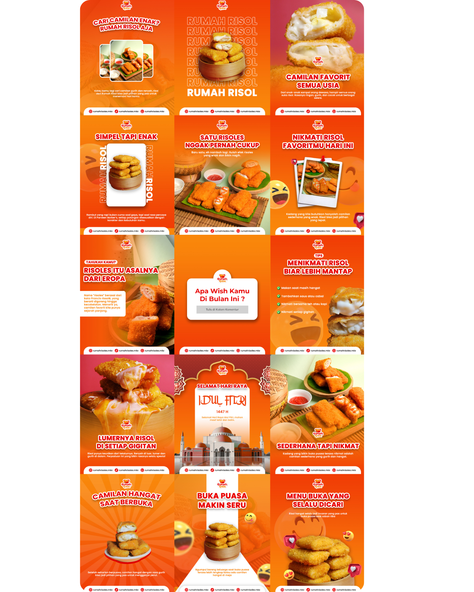
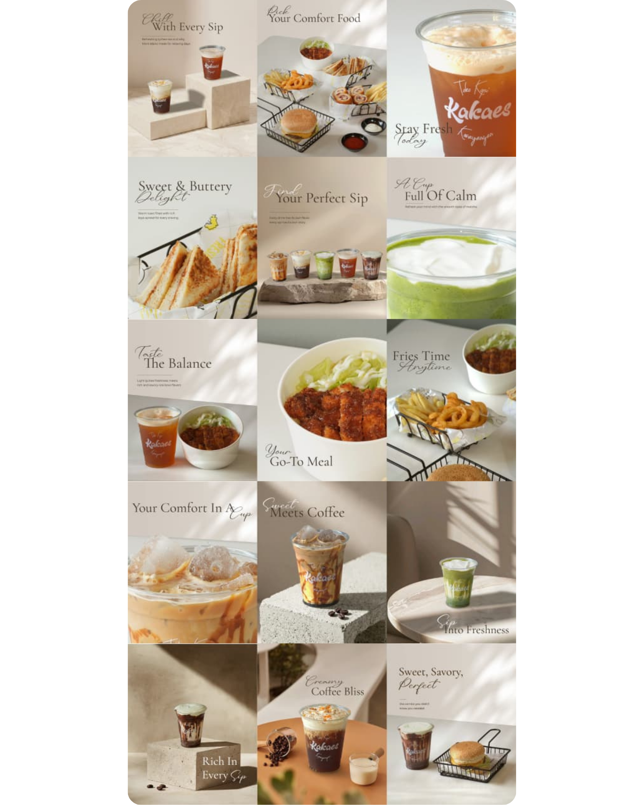
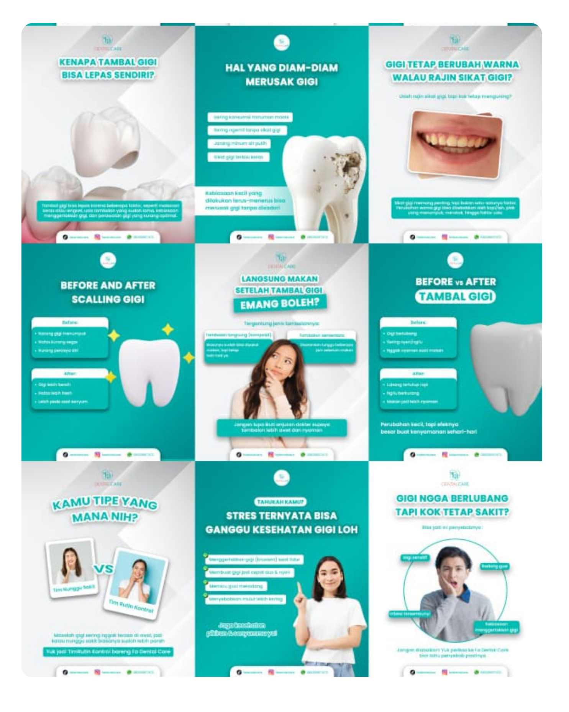
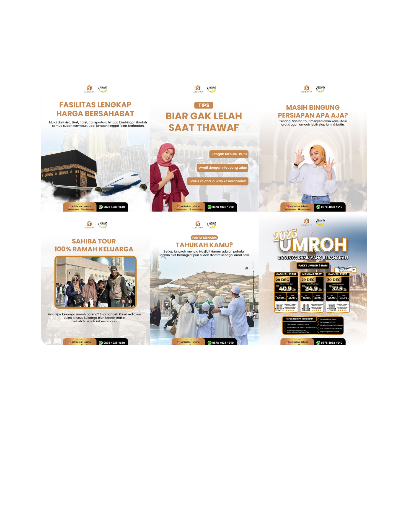

Mahasiswa Sistem Informasi · UNESA
Design
meets digital.
Halo, aku Atha. Aku suka mengeksplorasi persimpangan antara desain, teknologi, dan cara orang berinteraksi dengan produk digital. Bagiku, hal keren bukan cuma yang terlihat bagus, tapi juga yang benar-benar berguna.

DESIGN WITH PURPOSE✳
BUILD DIGITAL EXPERIENCES✳
STAY CURIOUS✳
LEARN BY MAKING✳
DESIGN WITH PURPOSE✳
BUILD DIGITAL EXPERIENCES✳
STAY CURIOUS✳
LEARN BY MAKING✳
01 / A little about me
Bukan cuma soal
tampilan.
Aku percaya desain dan teknologi bisa saling melengkapi untuk menciptakan pengalaman yang lebih baik.
Curious
by design.
by design.
Senang mengamati, mencoba hal baru, dan mencari cara agar ide bisa diwujudkan.
SIDOARJO, INDONESIA ↗
Perjalananku dimulai dari Desain Komunikasi Visual (DKV), tempat aku belajar menerjemahkan ide menjadi visual, membangun identitas, dan menyampaikan pesan.
Sekarang, sebagai mahasiswa Sistem Informasi di Universitas Negeri Surabaya, aku ingin melangkah lebih jauh: memahami bagaimana produk digital dirancang, bagaimana sistem dan data bekerja, serta bagaimana teknologi bisa menyelesaikan masalah nyata.
Aku masih dalam proses belajar—dan justru itu yang membuatku bersemangat. Aku ingin menggabungkan kepekaan visual dengan pola pikir sistematis untuk membuat sesuatu yang punya tujuan.
Visual thinking
UI/UX exploration
Digital products
Information systems
Always learning
02 / Selected works
Things I've
made & explored.
Beberapa jenis proyek yang mewakili proses belajarku dari visual, branding, hingga eksplorasi produk digital.






03 / What I'm building
Skills in progress.
Fondasi yang sudah kupunya, hal yang sedang kupelajari, dan arah yang ingin terus kujelajahi.
Visual & branding
Komposisi, tipografi, desain grafis, identitas visual, dan komunikasi melalui gambar.
UI/UX exploration
Layout antarmuka, hierarki informasi, wireframe, dan mulai memahami kebutuhan pengguna.
Digital product thinking
Menghubungkan masalah, kebutuhan pengguna, fitur, dan pengalaman produk.
Information systems
Mempelajari proses bisnis, sistem informasi, pengelolaan data, dan teknologi digital.
Programming basics
Sedang membangun dasar pemrograman dan logika untuk memahami cara kerja aplikasi.
Creative collaboration
Pernah terlibat dalam alur kerja desain, koordinasi kebutuhan, dan produksi konten.
04 / The journey so far
Different roots.
One direction.
Setiap pengalaman menambah perspektif baru—dan perjalanan ini masih berlanjut.
2023 — 2026
Desain Komunikasi Visual
Belajar dasar desain, branding, visual storytelling, produksi media, dan bekerja berdasarkan brief.
2025 — 2026
Project & freelance experience
Mengerjakan kebutuhan visual dan konten serta belajar beradaptasi dengan alur kerja dan kebutuhan klien.
2026 — now
Sistem Informasi · UNESA
Memperluas pemahaman ke sistem, data, teknologi, dan eksplorasi desain pengalaman produk digital.
05 / Let's connect
Got an idea?
Let's make it
matter.
Aku terbuka untuk belajar, berkolaborasi, dan bertemu orang-orang yang tertarik membangun sesuatu yang bermanfaat.